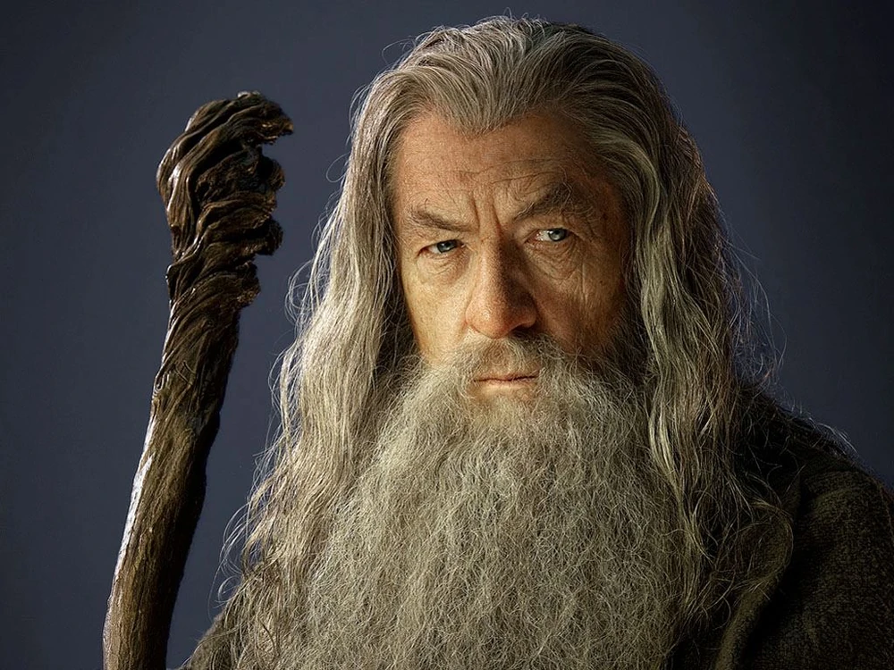
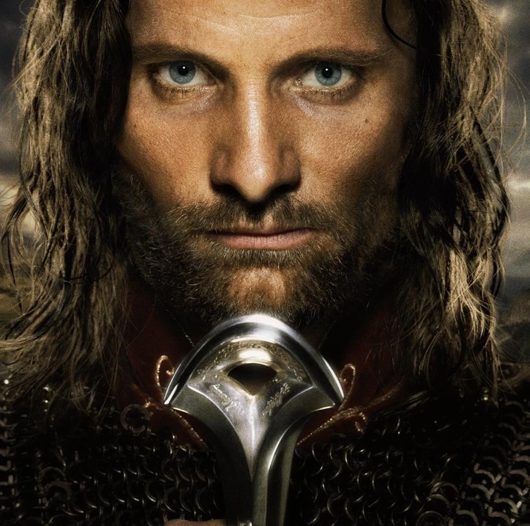
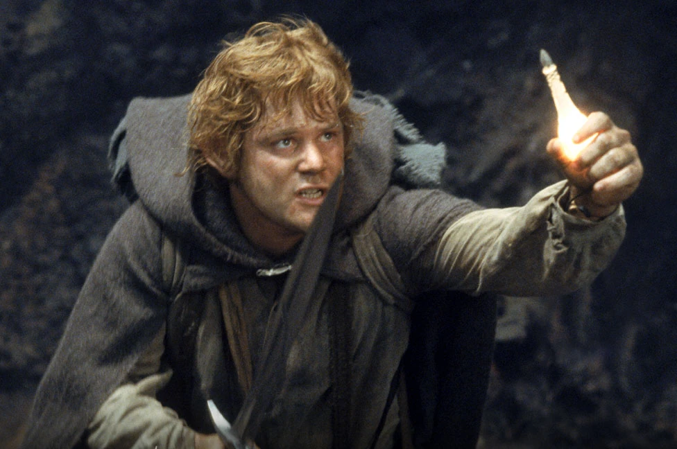

Gandalf

Aragorn
This work is copyrighted (or assumed to be copyrighted) and unlicensed.
However, it is believed that the use of this work to illustrate the
subject in question, where no free equivalent is available or could be
created that would adequately give the same information, on the
non-profit English Lord of the Rings Wiki, hosted on servers in the
United States, qualifies as fair use under United States copyright law.
Any other uses of this image, on this wiki or elsewhere, may be
copyright infringement. The individual who uploaded this work and first
used it in an article, and subsequent persons who place it elsewhere,
assert that this qualifies as fair use.

Sam